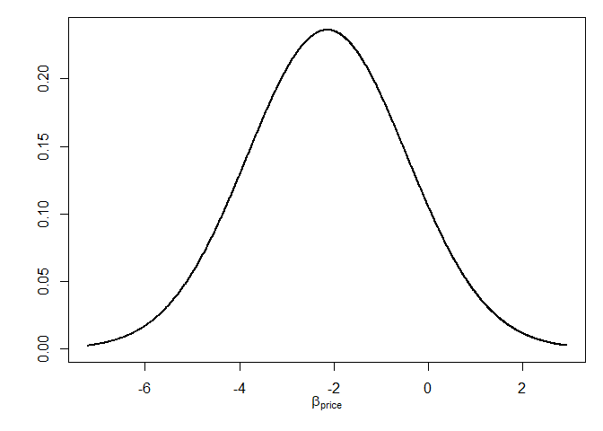

The goal of RprobitB is to fit mixed probit models to choice data. The package differs from comparable packages in two ways: Bayesian estimation and a focus on taste heterogeneity.
Installation
You can install the released version of RprobitB from CRAN with:
install.packages("RprobitB")And the development version from GitHub with:
# install.packages("devtools")
devtools::install_github("loelschlaeger/RprobitB")Example
This is a basic example to show how to fit a mixed probit model and make choice predictions:
library(RprobitB)
#> Thanks for using RprobitB 1.0.0, happy choice modeling!
#> See https://loelschlaeger.github.io/RprobitB for help.
#> Type 'citation("RprobitB")' for citing this R package.
#>
#> Attache Paket: 'RprobitB'
#> Die folgenden Objekte sind maskiert von 'package:stats':
#>
#> predict, simulate
#> Das folgende Objekt ist maskiert 'package:base':
#>
#> transform
data("Train", package = "mlogit")
data = prepare(form = choice ~ price | 0 | time + comfort + change,
choice_data = Train,
re = "price",
standardize = "all",
test_prop = 0.5)
model = mcmc(data$train)
#> Iteration Info ETA (min)
#> 0 started Gibbs sampling
#> 1000 1
#> 2000 1
#> 3000 1
#> 4000 1
#> 5000 1
#> 6000 1
#> 7000 1
#> 8000 1
#> 9000 1
#> 10000 done, total time: 1 min
summary(model)
#> Probit model 'choice ~ price | 0 | time + comfort + change'.
#>
#> MCMC settings:
#> - R: 10000
#> - B: 5000
#> - Q: 1
#>
#> Normalization:
#> - Level: Utility differences with respect to alternative 2.
#> - Scale: Coefficient of the 1. error term variance in Sigma fixed to 1.
#>
#> Legend of alternatives:
#> name
#> 1 A
#> 2 B
#>
#> Legend of linear coefficients:
#> name re
#> 1 time_A FALSE
#> 2 time_B FALSE
#> 3 comfort_A FALSE
#> 4 comfort_B FALSE
#> 5 change_A FALSE
#> 6 change_B FALSE
#> 7 price TRUE
#>
#> Latent classes: 1
#> - Update: FALSE
#>
#> Parameter statistics:
#> mean sd R^
#> alpha
#>
#> 1 -0.82 0.10 1.01
#> 2 -0.83 0.10 1.01
#> 3 -0.53 0.06 1.01
#> 4 -0.51 0.06 1.02
#> 5 -0.24 0.05 1.01
#> 6 -0.21 0.06 1.00
#>
#> s
#>
#> 1 1.00 0.00 NaN
#>
#> b
#>
#> 1.1 -2.16 0.30 1.05
#>
#> Omega
#>
#> 1.1,1 2.88 0.96 1.02
#>
#> Sigma
#>
#> 1,1 1.00 0.00 1.00
plot(model, type = "mixture")
predict(model, data$test)
#> predicted
#> true A B
#> A 517 220
#> B 232 505